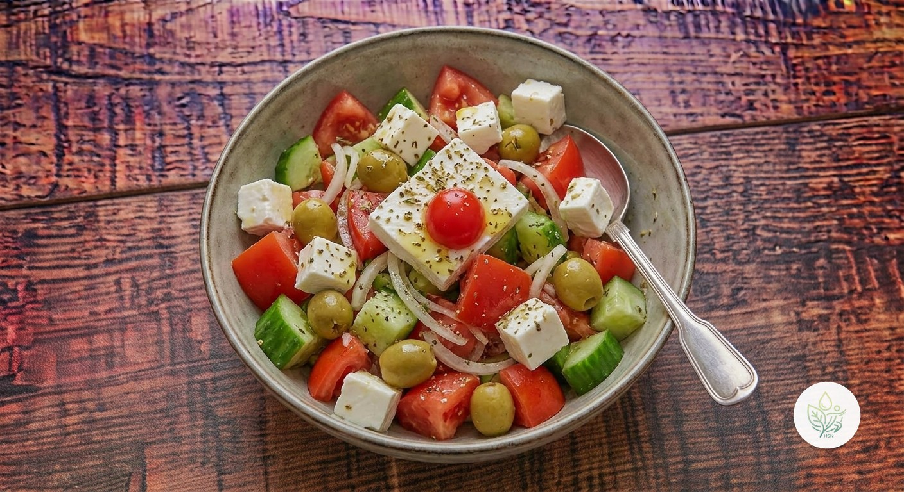

Ensalada Griega
BEl clásico griego sin trucos: pepino, tomate, feta y aceitunas con un aliño sencillo de AOVE y orégano. Fresca, rápida y sin cocción.
La combinación de verduras frescas, grasa monoinsaturada del AOVE y las aceitunas, y proteína del feta la hace muy nutritiva, pero tanto el feta como las aceitunas son ingredientes salados: la ración ronda los 975 mg de sodio, la mitad de lo recomendable en todo el día. La calificamos B por eso, no por sus verduras ni su grasa, que son excelentes.
Ingredientes (toca el nombre para ver su ficha)
- 🥒 Pepino 200 g
- 🍅 Tomate 250 g
- 🧀 Queso Feta 100 g
- 🫒 Aceitunas Verdes 60 g
- 🧅 Cebolla 40 g
- 🫒 AOVE (aceite de oliva virgen extra) 20 g
- 🌿 Orégano 1 g
- 🍋 Limón 20 g
Elaboración
- Corta el pepino, el tomate y la cebolla en trozos grandes; mézclalos en un bol.
- Añade la feta en dados o desmenuzada y las aceitunas.
- Alíñalo con el AOVE, el zumo de limón y el orégano justo antes de servir, para que las verduras no suelten agua.
Información nutricional (receta completa, 2 raciones)
De las grasas, 19.2 g son saturadas · de los carbohidratos, 16.4 g son azúcares · sodio: 1948.8 mg
Información nutricional (por ración)
De las grasas, 9.6 g son saturadas · de los carbohidratos, 8.2 g son azúcares · sodio: 974.4 mg
Preguntas frecuentes
¿Cuántas calorías tiene la receta de Ensalada Griega?
Toda la receta de Ensalada Griega tiene 627.2 kcal repartidas en 2 raciones, es decir, unas 313.6 kcal por ración.
¿Puedo dejarla preparada con antelación?
Corta las verduras y guárdalas en la nevera, pero añade el feta, las aceitunas y el aliño justo antes de comer para que no se ablande.
¿Cómo reduzco el sodio?
Usa la mitad de feta y aclara las aceitunas bajo el grifo antes de añadirlas; pierdes algo de sabor pero bajas bastante el sodio.
¿Qué aceitunas van mejor?
Las kalamata son las más tradicionales, pero cualquier aceituna negra o verde de buena calidad funciona.